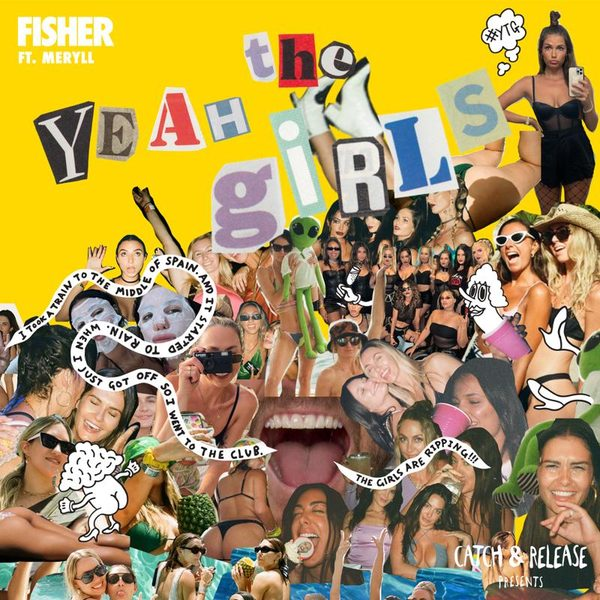

I 24 dischi
 1
Can U Dance (To My Beat)Tiësto
1
Can U Dance (To My Beat)Tiësto
 2
Raw (Tony Romera Extended Mix)Julio Navas, Gustavo Bravetti, David Amo
2
Raw (Tony Romera Extended Mix)Julio Navas, Gustavo Bravetti, David Amo
 3
No DifferentDJ ROSS, POUL
3
No DifferentDJ ROSS, POUL

4 Yeah The Girls feat. MERYLLFISHER (OZ) 5
Ferrari (Oliver Heldens Remix Extended)James Hype, Miggy Dela Rosa
5
Ferrari (Oliver Heldens Remix Extended)James Hype, Miggy Dela Rosa
 6
Two Caps (Extended Mix)D.O.D
6
Two Caps (Extended Mix)D.O.D
 7
Guarachando (Extended Mix)Albert Neve & Abel Ramos
7
Guarachando (Extended Mix)Albert Neve & Abel Ramos
 8
Clap (Extended Mix)Armin van Buuren
8
Clap (Extended Mix)Armin van Buuren
 9
Free (Extended Mix)Fedde Le Grand
9
Free (Extended Mix)Fedde Le Grand
 10
Always On My MindSLVR
10
Always On My MindSLVR
 11
Take Me Back (Joel Corry rmx)Lewis Thompson, David Guetta, Joel Corry
11
Take Me Back (Joel Corry rmx)Lewis Thompson, David Guetta, Joel Corry
 12
From the topNO SIGNE
12
From the topNO SIGNE
 13
Stressed outRetrovision
13
Stressed outRetrovision
 14
Not the sameJasted & Chester Young
14
Not the sameJasted & Chester Young
 15
La MamáINNDRIVE, Ishimaru
15
La MamáINNDRIVE, Ishimaru
 16
My RhythmMadison Mars
16
My RhythmMadison Mars
 17
Anywhere's HomeKSHMR
17
Anywhere's HomeKSHMR
 18
Flex GameYO-TKHS
18
Flex GameYO-TKHS
 19
UniqueRichard Vission, Luciana, Christo
19
UniqueRichard Vission, Luciana, Christo
 20
Break My Soul (MORGANJ Remix)Beyoncé
20
Break My Soul (MORGANJ Remix)Beyoncé
 21
Wild (Extended Mix)Piero Pirupa, Ben Kim
21
Wild (Extended Mix)Piero Pirupa, Ben Kim
 22
This Sh1t (Original Mix)Vlada Asanin
22
This Sh1t (Original Mix)Vlada Asanin
 23
People Like You Feat. ElishamaAlbert Neve, Alexander Som
23
People Like You Feat. ElishamaAlbert Neve, Alexander Som
 24
Work That Body (Extended Mix)Kurd Maverick & Siege
24
Work That Body (Extended Mix)Kurd Maverick & Siege
La tracklist
- 1 Can U Dance (To My Beat) Tiësto Musical Freedom
- 2 Raw (Tony Romera Extended Mix) Julio Navas, Gustavo Bravetti, David Amo Toolroom Records
- 3 No Different DJ ROSS, POUL Bang Record
- 4 Yeah The Girls feat. MERYLL FISHER (OZ) Catch & Release
- 5 Ferrari (Oliver Heldens Remix Extended) James Hype, Miggy Dela Rosa Universal-Island Records
- 6 Two Caps (Extended Mix) D.O.D Armada Music
- 7 Guarachando (Extended Mix) Albert Neve & Abel Ramos SONO Music
- 8 Clap (Extended Mix) Armin van Buuren Armada Music
- 9 Free (Extended Mix) Fedde Le Grand Darklight Recordings
- 10 Always On My Mind SLVR Mentalo Music
- 11 Take Me Back (Joel Corry rmx) Lewis Thompson, David Guetta, Joel Corry RCA Records
- 12 From the top NO SIGNE Hexagon
- 13 Stressed out Retrovision Time Machine
- 14 Not the same Jasted & Chester Young Sub Religion Records
- 15 La Mamá INNDRIVE, Ishimaru Virgin Music Label And Artist Services (S&D)
- 16 My Rhythm Madison Mars Spinnin' Records
- 17 Anywhere's Home KSHMR Dharma
- 18 Flex Game YO-TKHS Hysteria Records
- 19 Unique Richard Vission, Luciana, Christo Insomniac Records
- 20 Break My Soul (MORGANJ Remix) Beyoncé Parkwood Entertainment/Columbia
- 21 Wild (Extended Mix) Piero Pirupa, Ben Kim Defected Records
- 22 This Sh1t (Original Mix) Vlada Asanin 45ke
- 23 People Like You Feat. Elishama Albert Neve, Alexander Som Toolroom Records
- 24 Work That Body (Extended Mix) Kurd Maverick & Siege Toolroom Records